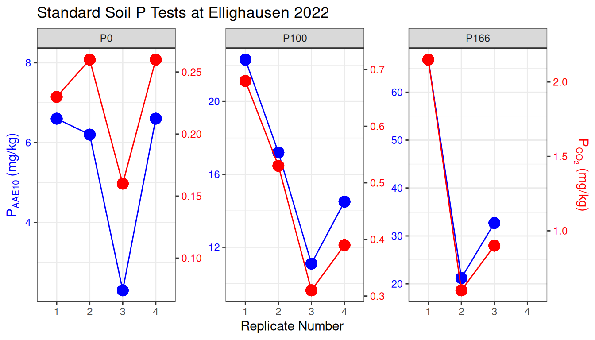

1 Discussion
Before addressing the individual hypotheses, it is crucial to first evaluate the overall feasibility of the experimental results and the integrity of the underlying data. A critical examination of the agronomic data revealed a significant and implausible anomaly at the Cadenazzo (CAD) site. Across multiple years, the zero-fertilizer treatment (P0), which has not received P for nearly 40 years, consistently showed higher median yields than the optimally fertilized treatments. This contradicts fundamental agronomic principles and stands in contrast to previous findings from the same long-term experiment (hirte2021?), suggesting a systematic issue with the data from this specific site. As the corresponding soil analysis data for Cadenazzo was unavailable, a definitive explanation for this anomaly could not be found. This unresolved issue, combined with the site’s uniquely high productivity, introduces significant unexplained variance and must be considered when interpreting the performance of the predictive models, particularly for yield-based metrics.
A second key observation is the consistent, large discrepancy between the marginal R-squared (\(R^2_m\)) and conditional R-squared (\(R^2_c\)) values in the models for yield and P-uptake. This finding is plausible and expected, as it underscores that in P-sufficient Swiss soils, crop yield is primarily co-limited by overarching pedoclimatic factors rather than P availability alone. The Swiss fertilization guidelines (GRUD), on which the P100 treatment is based, were designed to ensure P is never limiting, which over decades has led to a widespread accumulation of “legacy P” in many agricultural soils (Hirte et al., 2018). Consequently, the P100 and P166 treatments in this study were likely operating in a P-surplus range, well above the critical threshold for a yield response. This lack of P-limitation means the experiment was not designed to effectively test the sensitivity of different soil P metrics for predicting yield, which fundamentally influences the size and significance of the effects we could detect.
Therefore, a marginal R² of around 8% for a model predicting national-normalized yield based on a single soil P metric should not be considered low. In fact, it is arguably higher than expected, demonstrating that despite the overwhelming influence of climate and the general P-sufficiency of the soils, both static and kinetic P tests can still capture a statistically significant, albeit small, portion of the variance in crop productivity. With this context established, we can proceed to a detailed evaluation of the specific hypotheses.
1.1 Hypothesis 1: The Nuanced Role of Standard Soil Tests
Hypothesis 1a posited that standard STP methods (\(P_{CO_2}\) and \(P_{AAE10}\)) would correlate with the P-Balance but be weak predictors of crop yield. The findings challenge this hypothesis in two unexpected ways.
First, the STP methods failed completely to predict the P-Balance. The models showed no relationship between these static tests and the long-term nutrient surplus or deficit, directly contradicting our hypothesis. This is a critical finding, as it suggests that while tests like \(P_{CO_2}\) and \(P_{AAE10}\) are sensitive to short-term changes from annual fertilization, they do not adequately capture the cumulative, long-term P status of the soil system.
Second, the performance of STP methods in predicting yield was highly context-dependent. When predicting site-normalized yield (\(Y_{norm}\)), which assesses the yield response relative to a site’s own potential, the STP models were remarkably effective, explaining up to 22% of the variance. This result contradicts the part of our hypothesis that expected weak performance and suggests that for within-field management, where the goal is to ensure P is not limiting relative to that specific environment’s potential, traditional capacity-based tests are well-suited and robust.
However, when predicting national-normalized yield (\(Y_{rel}\)) and P-uptake (\(P_{up}\)), the STP models performed poorly, aligning with our initial expectations. The weak performance in predicting yield and P-uptake can likely be attributed to several factors. Firstly, crop yield in field settings is often co-limited by multiple factors beyond phosphorus. Year-to-year variations in climate, such as solar radiation and water availability, as well as the supply of other key nutrients like nitrogen, can become the primary drivers of productivity, masking the more subtle influence of soil P status (Sadras, 2002; Sinclair, 1998). The large gap between the marginal and conditional \(R^2\) in our models strongly suggests that these site- and year-specific variables, captured by the random effects, were indeed the dominant factors.
Furthermore, response variables like \(P_{up}\) and \(P_{bal}\) are calculated as the product of yield and P concentration, which can introduce and propagate measurement uncertainty. If yield itself is only weakly correlated with soil P status, this “noise” is carried into the derived variables, making it even more difficult to establish a clear statistical relationship (Rowe et al., 2016).
The predictive weakness may also stem from the experimental design and modeling approach. This study utilized samples primarily from the P-deficient (0%) and P-sufficient (100% and 167%) treatments. Crop yield response to fertilizer typically follows a saturation curve, and it is possible that our dataset was concentrated on the less responsive parts of this curve, thus lacking statistical power in the most dynamic range (Schlesinger, 2009). While our use of a linear mixed-effects model was appropriate for the available data, it cannot capture the diminishing returns characteristic of crop nutrient response. As demonstrated by Hirte et al. (2021) on these same STYCS trials, non-linear models like the Mitscherlich equation are better suited for describing such saturation kinetics but would require data from the intermediate fertilization levels to be applied robustly (Hirte et al., 2021).
Regarding Hypothesis 1b, the findings were largely supportive. The analysis of soil properties confirmed that STP measurements are not pure measures of P but are instead complex indices reflecting a combination of P status and overarching soil chemistry. The predicted negative relationship between pH and \(P_{AAE10}\) was observed, and the underlying chemical mechanisms for this are well-established, particularly in calcareous or high-pH soils like several in this study (e.g., ALT, GRA).
The AAE10 method relies on two key components: ammonium acetate as a buffer and EDTA as a chelating agent to dissolve mineral-bound P. However, its effectiveness is compromised in soils with high pH and an abundance of free calcium (\(Ca^{2+}\)) and magnesium (\(Mg^{2+}\)) cations, often from calcium carbonates (\(CaCO_3\)). There are two primary reasons for this:
- Consumption of EDTA: The primary role of EDTA is to bind to cations like iron and aluminum that precipitate phosphate, thereby releasing P into the solution. However, EDTA has a high affinity for divalent cations, so in calcareous soils, a significant portion of the EDTA is consumed by binding to the abundant free \(Ca^{2+}\) and \(Mg^{2+}\), making it less available to extract the target phosphate compounds (Fixen & Grove, 1993).
- Buffering Capacity: The acetate buffer in the AAE10 solution is designed to maintain a consistent pH. However, soils with high carbonate content have a strong natural buffering capacity that can resist the pH change intended by the extractant, further reducing its efficiency in dissolving pH-sensitive P minerals.
This known limitation explains why \(P_{AAE10}\) can underestimate plant-available P in calcareous soils and supports our finding of a significant pH-dependence. It underscores that the choice of an appropriate soil test must take into account the fundamental chemistry of the soil matrix itself.
1.2 Hypothesis 2: Characterizing P Desorption Kinetics
Hypothesis 2a focused on the methodological feasibility of characterizing P desorption. It predicted that while the process would follow first-order kinetics, a non-linear modeling approach would be more robust than the original linearized method proposed by Flossmann & Richter (1982). The results from this thesis unequivocally support this hypothesis. Our initial attempts to linearize the desorption data failed systematically, with model intercepts deviating significantly from the required origin, thus violating a core assumption of the method.
This statistical failure has a fundamental chemical basis. The linearized model requires an a priori estimate of the maximum desorbable P pool (\(P_{desorb}\)), which Flossmann and Richter approximated by subtracting a water-soluble P measurement from a stronger chemical extractant (e.g., \(P_{desorb} \approx P_{CAL} - P_{H2O}\)). However, in all but the most severely depleted soils, the P value from the stronger extractant is orders of magnitude greater than that from water (\(P_{CAL} >> P_{H2O}\)). This leads to an estimated \(P_{desorb}\) that is vastly higher than the actual solubility limit of phosphate in the soil solution. A kinetic desorption curve in water can physically only plateau at the concentration dictated by mineral solubility; by providing the model with a theoretical maximum that is chemically unattainable, the linearization becomes mathematically invalid. This explains why the linearized approach failed and underscores the necessity of a method that does not rely on such flawed assumptions.
In contrast, the direct application of a non-linear mixed-effects model successfully captured the curvilinear nature of P release for nearly all samples by estimating \(P_{desorb}\) directly from the kinetic data itself. This confirms that while the foundational concept of first-order kinetics is sound, modern computational methods that avoid data transformation provide a far more accurate and statistically valid approach to parameter estimation (Kuang et al., 2012).
While the non-linear model proved robust, visual inspection of the kinetic curves revealed that two specific replicates—from the P100 and P166 treatments at the Ellighausen site—showed markedly higher and faster P release than their counterparts. To determine whether this was due to a methodological artifact or true field variability, the standard soil test results for all replicates at this site were examined (Figure 1). The diagnostic plot clearly shows that these same two replicates also registered as significant outliers for both \(P_{CO_2}\) and \(P_{AAE10}\). This consistent pattern across three independent measurement techniques strongly suggests that the deviation is not a result of error in the kinetic procedure, but rather reflects genuine micro-site heterogeneity.
Such heterogeneity could arise from several sources. One plausible explanation, given the decades-long application of Triple-Superphosphate (primarily monocalcium phosphate), is the presence of residual, undissolved fertilizer granules in the soil matrix. The accidental inclusion of even a single such particle in the 10g subsample for a specific replicate would lead to artificially inflated P values across all chemical extractions (Fisher, 1925). This highlights a fundamental challenge in soil analysis and reinforces the importance of robust modeling. The use of a non-linear mixed-effects model is particularly advantageous in this context, as it is designed to handle such individual variations by estimating a common overall trend while allowing for random deviations for each sample, thereby preventing a few anomalous data points from unduly influencing the overall conclusions [Fisher (1925); Fisher1935; Yates1964; Van Es et al. (2002)].
Ultimately, the successful validation of our derived parameters against established Isotopic Exchange Kinetic (IEK) data further solidifies the robustness of our methodological approach, demonstrating that this simpler extraction method effectively captures both the capacity (\(P_{desorb}\)) and intensity (k) aspects of P dynamics.
Hypothesis 2b predicted that the derived kinetic parameters would be significantly influenced by fundamental soil properties, and this was also strongly supported by the findings. The analysis revealed a clear and meaningful separation in the drivers of the capacity and kinetic components. The desorbable P pool (\(P_{desorb}\)), representing the quantity of readily available P, was strongly and negatively correlated with dithionite-extractable iron and aluminum. This aligns perfectly with established soil science principles, as these free oxides provide the primary sorption surfaces that bind P, thereby controlling the size of the exchangeable pool (Brady & Weil, 2016; Sposito, 2008).
Conversely, the rate constant (k), which represents the speed of P release, was not primarily driven by the oxide content but was instead significantly related to soil texture (clay content) and pH. The negative relationship with clay content is logical, as higher clay content can increase the tortuosity of diffusion pathways, effectively slowing the movement of phosphate from the solid phase to the bulk solution (Nye & Tinker, 2000). The influence of pH is also consistent with known phosphate chemistry, as pH governs the speciation of orthophosphate ions and their affinity for mineral surfaces (Sparks, 2003). These distinct relationships confirm that \(P_{desorb}\) and k are not redundant parameters; they represent fundamentally different aspects of P availability—the size of the pool and the rate of access to it—which are governed by different soil-chemical and physical properties.
1.3 Hypothesis 3: The Context-Dependent Power of Kinetic Parameters
The central hypothesis of this thesis predicted that a model incorporating kinetic parameters (k and \(P_{desorb}\)) would explain a significantly greater proportion of the variance in agronomic outcomes compared to models based on standard, static STP measurements. The results provide a nuanced verdict: the hypothesis was strongly supported in one context, but clearly refuted in others, revealing that the utility of kinetic parameters is highly dependent on the specific agronomic question being addressed.
The most compelling support for Hypothesis 3 came from the prediction of the P-Balance (\(P_{bal}\)). In this analysis, the kinetic model, driven by the desorbable P pool (\(P_{desorb}\)), was exceptionally powerful, explaining over 57% of the variance. In stark contrast, the standard STP models had zero predictive power. This is the most significant finding of this study. The P-Balance represents the long-term integration of nutrient inputs and outputs, and the fact that a kinetic capacity parameter (\(P_{desorb}\)) so perfectly captures this state demonstrates its superiority for assessing the cumulative effects of soil management. It suggests that while standard tests reflect the immediate chemical environment, \(P_{desorb}\) provides a more holistic measure of the soil’s P supply capacity and its legacy from past fertilization.
However, when predicting yield and P-uptake, the hypothesis was not supported. The reasons for this are likely multifaceted and highlight several limitations of the current study. A primary factor is that the P fertilization levels analyzed (0%, 100%, and 167%) may not have created conditions where P was the primary limiting factor for yield. The standard 100% fertilization rate in the STYCS trial is already designed for optimal yield, and decades of application at this level have likely led to significant “legacy P” accumulation (Hirte et al., 2018). Consequently, the 167% treatment would only add to this surplus, while the 0% treatment represents an extreme deficiency. A direct comparison between kinetic and static tests would be far more powerful if intermediate levels (e.g., 33% and 67%) were included, as this is the range where the rate of P supply is most likely to be a yield-limiting factor.
Furthermore, the linear mixed-effects models used, while appropriate for the data structure, could not account for two major sources of variation. First, as seen in the exploratory analysis in with the mlr3-model-comparisons, weather variables alone were often strong predictors of yield. The (1|year) and (1|Site) random effects in our models are proxies for this, bundling complex pedoclimatic information—such as growing degree days, soil moisture patterns, and soil textural differences—into single terms. These effects were so large that they overshadowed the more subtle influence of soil P status. Future studies could improve predictive power by incorporating specific weather covariates as fixed effects, allowing for a clearer isolation of the soil P signal.
Second, the assumption of a linear P response is a simplification. As shown by Hirte et al. (2021), crop yield response to P is non-linear and best described by a saturation curve. This is particularly relevant given the high yields observed at some sites, such as Cadenazzo, where relative yields reached up to 300% in some years, a level far beyond any plausible linear response to P. A more robust modeling approach would involve fitting non-linear models, though this would, as previously noted, require data from the full spectrum of fertilization treatments.
References
Brady, N. C., & Weil, R. R. (2016). The nature and properties of soils (15th ed.). Pearson.
Fisher, R. A. (1925). Statistical methods for research workers. Oliver; Boyd.
Fixen, P. E., & Grove, J. H. (1993). Testing soils for phosphorus. Soil Science Society of America Book Series, 3, 141–180. https://doi.org/10.2136/sssabookser3.2ed.c11
Hirte, J., Leifeld, J., Laggoun-Défarge, A., Mayer, P., & Gubler, J. M. (2018). Relationship between soil phosphorus, phosphorus budget, and soil properties in swiss agricultural soils. Ambio, 47(Suppl 1), 53–64. https://doi.org/10.1007/s13280-017-0987-9
Hirte, J., Stüssel, C. E. M., Leifeld, J., Gubler, J. M., Sinaj, S., & Frossard, E. (2021). Yield response to soil test phosphorus in switzerland: Pedoclimatic drivers of critical concentrations for optimal crop yields using multilevel modelling. Agriculture, Ecosystems & Environment, 309, 107270. https://doi.org/10.1016/j.agee.2020.107270
Kuang, W., Wang, W. J., Liu, X. J., Cui, Y. F., Chen, Z. H., Wang, B. R., & Lin, X. Y. (2012). Phosphorus desorption kinetics in soils with different long-term fertilization: A comparison of kinetic models. Journal of Soils and Sediments, 12, 739–749. https://doi.org/10.1007/s11368-012-0498-8
Nye, P. H., & Tinker, P. B. (2000). Solute movement in the rhizosphere. Oxford University Press.
Rowe, H., Withers, P. J. A., Baas, P., Chan, N. I., Doody, D., Holiman, J., Jacobs, B., Li, H., MacDonald, G. K., McDowell, R., Sharpley, A. N., Shen, J., Salm, C. van der, & Weigelt, A. (2016). Integrating legacy phosphorus into sustainable nutrient management strategies for future food, bioenergy and water security. Nutrient Cycling in Agroecosystems, 104(3), 393–412. https://doi.org/10.1007/s10705-015-9726-1
Sadras, V. O. (2002). Co-limitation of crop yield by water and nitrogen in semi-arid environments. Agronomie, 22(5), 433–445. https://doi.org/10.1051/agro:2002018
Schlesinger, W. H. (2009). Biogeochemistry: An analysis of global change (2nd ed.). Academic Press.
Sinclair, T. R. (1998). Historical changes in harvest index and crop nitrogen accumulation. Crop Science, 38(3), 638–643. https://doi.org/10.2135/cropsci1998.0011183X003800030002x
Sparks, D. L. (2003). Environmental soil chemistry (2nd ed.). Academic Press. https://doi.org/10.1016/B978-0-12-656446-4.50001-X
Sposito, G. (2008). The chemistry of soils (2nd ed.). Oxford University Press.
Van Es, H. M., Van Kessel, C., & Richter, D. D. (2002). Spatial analysis of agricultural field trials. Agronomy Journal, 94(1), 283–296. https://doi.org/10.2134/agronj2002.2830